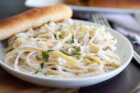

Alfredo
Taken from here
Description

A fairly simple rendition of alfredo, spiced up with some unique spices
If you find you don't prefer basil and nutmeg, swap them for anything else
Ingredients
- 8 oz dry fettuccine pasta
- 8 oz cream cheese
- 3/4 cup parmesan cheese
- 1/2 cup margarine
- 1/2 cup milk
- 1 tsp garlic powder
- 1/4 tsp dried basil
- 1 pinch ground nutmeg
Instructions
- Bring a large pot of lightly salted water to a boil.
- Add pasta and cook for 8-10 mi or until al dente; drain
- In a medium saucepan, combine cream cheese, Parmesan, margarine, milk, garlic powder andd basil.
- Stir over low heat until smooth and creamy, 10-15 min
- Toss sauce with pasta and sprinkle with nutmeg.
Back to home